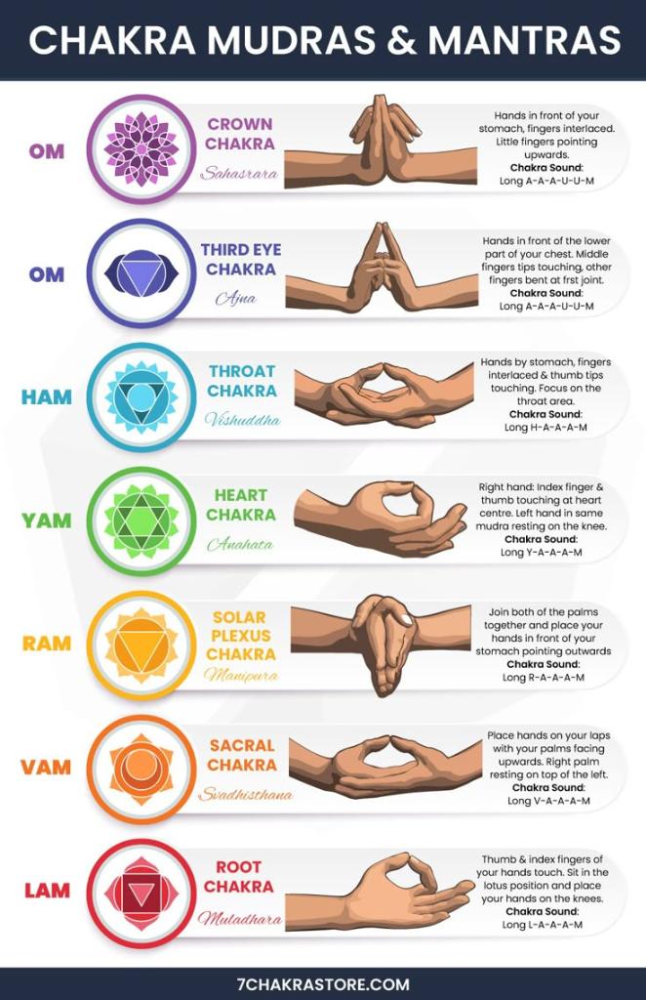

The Seven
Chakras
An immersive guide to the luminous energy centers within. Discover the Sanskrit origins, vibrational frequencies, and affirmations that harmonize your vital force.

OM
Crown Chakra • 963 HzOM is also the seed sound of the Crown Chakra (Sahasrara), representing the sound of the universe itself. At this level, the vibration signifies pure consciousness and a connection to something greater than ourselves. Chanting a long, silent, or deep OM helps you move beyond individual thoughts into a state of total peace and spiritual unity. It is the final step in achieving total inner balance.
OM (SHAM)
OM (often used with the internal vibration of SHAM) is the seed sound of the Third Eye Chakra (Ajna). This sacred sound represents intuition and the "inner eye" that sees beyond the physical world. Chanting OM focuses your mind and sharpens your perception, allowing you to connect with your inner wisdom. It is used to achieve mental clarity and a deeper understanding of life's purpose.
HAM
Throat Chakra • 741 HzHAM is the seed sound of the Throat Chakra (Vishuddha). This vibration is focused on the power of communication and the expression of your personal truth. Chanting HAM helps clear blockages in the throat, making it easier for you to speak your mind clearly and listen to others with intention. It is used to find your authentic voice and live more truthfully.
YAM
YAM is the seed sound of the Heart Chakra (Anahata). It carries the energy of air and represents the power of unconditional love and compassion. Chanting YAM helps heal emotional wounds and opens your heart to give and receive love freely. It is a soothing vibration used to bring peace, empathy, and harmony to your relationships and your inner self.
RAM
Solar Plexus • 528 HzRAM is the seed sound of the Solar Plexus Chakra (Manipura). It is a powerful vibration that represents fire and personal transformation. By chanting RAM, you tap into your inner strength, willpower, and confidence. This sound is ideal for those looking to overcome procrastination or self-doubt, as it ignites the "inner sun" that fuels your motivation and self-esteem.
VAM
VAM is the seed sound of the Sacral Chakra (Svadhisthana). This mantra resonates with the element of water and helps clear the path for emotional expression and creativity. Chanting VAM allows you to let go of emotional tightness and open yourself up to healthy relationships and new ideas. It is used to bring fluidity, joy, and a natural flow back into your life.
LAM
Root Chakra • 396 HzLAM is the seed sound of the Root Chakra (Muladhara). This vibration is used to build a strong foundation and help you feel safe in your physical body. Chanting LAM helps release fears and anxieties, anchoring your energy firmly to the earth. It is the perfect starting point for any meditation practice aimed at gaining stability, security, and a sense of belonging.
Master Your
Internal Alignment
Beyond the theory lies the practice. Join the PRANA Collective for exclusive guided sessions on Kundalini awakening, daily chakra meditations, and nutritional guides tailored to your energetic needs.